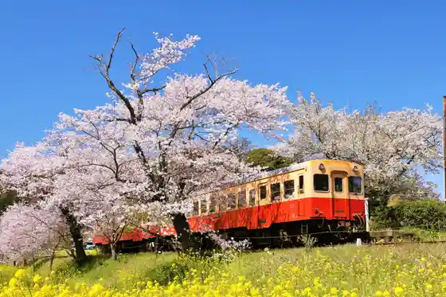
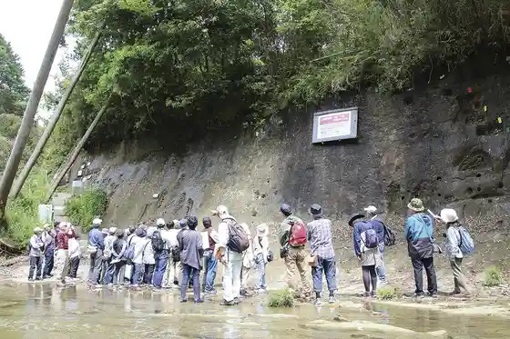
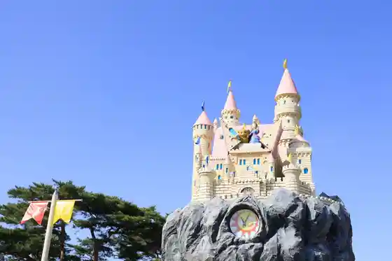
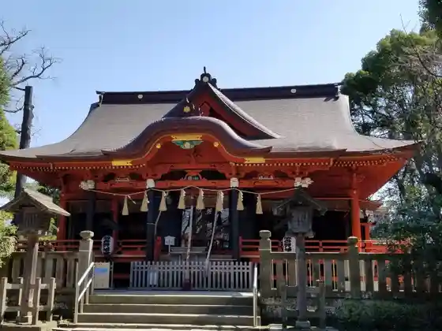

Yoro Gorge
Ichihara, Chiba · 0470-80-1146 · Official / source link
Kominatotetsudo
Ichihara, Chiba · 0436-21-3133 · Official / source link

Chibaniambijita Center
Ichihara, Chiba · 0436-96-2755 · Official / source link

Chiba Kodomo no Kuni Kizzu Dam
Ichihara, Chiba · 0436-74-3174 · Official / source link

Iigaoka Hachiman Shrine
Ichihara, Chiba · 0436-41-2072 · Official / source link

Nagae Dam
Ichihara, Chiba · 0475-35-4447 · Official / source link
Orijinarumeka Umi Zuri Park
Ichihara, Chiba · 0436-21-0419 · Official / source link
Boso Satoyama Torokko Resshaunko / Kominatotetsudo Goi Eki Kazusa Ushiku Eki Yoro Keikoku Eki
Ichihara, Chiba · 0436-23-5584 · Official / source link
ANIMAL WONDER REZOURT Ichihara Zo no Kuni
Ichihara, Chiba · 0436-88-3001 · Official / source link
Ichihara Lakeside Art Museum
Ichihara, Chiba · 0436-98-1525 · Official / source link
Ichihara Mitsubachi Ranch
Ichihara, Chiba · 0436-63-3411 · Official / source link
Roadside Station Azu no Sato Ichihara
Ichihara, Chiba · 0436-37-8891 · Official / source link
Ichihara Kuodo Forest
Ichihara, Chiba · 0436-96-1119 · Official / source link
Yoro Keikoku Kawa no Eki Ayu Village
Ichihara, Chiba · 0436-96-0765 · Official / source link
Yoro Kawa Rinkai Park
Ichihara, Chiba · 0436-23-1700 · Official / source link
Kominatotetsudo Tsukisaki Eki
Ichihara, Chiba · 0436-21-3133 · Official / source link
The Bamboo Forest
Ichihara, Chiba · 0436-63-6277 · Official / source link
Boso Juji Sono
Ichihara, Chiba · 0436-36-4021 · Official / source link
Toilet in Nature/ Meshi Kyu Eki
Ichihara, Chiba · 0436-23-9755 · Official / source link
Kazusa Sarashina Park
Ichihara, Chiba · 0436-20-3555 · Official / source link
Ichihara History Museum
Ichihara, Chiba · 0436-41-9344 · Official / source link
Ichihara Bunka Forest
Ichihara, Chiba · 0120-341-342 · Official / source link
Kominatotetsudo Kazusa Kubo Eki
Ichihara, Chiba · 0436-21-3133 · Official / source link
Shrine
Ichihara, Chiba · 0436-98-0472 · Official / source link
Ichihara Suiko Kumiai
Ichihara, Chiba · 0436-36-5474 · Official / source link
Kominatotetsudo Satomi Eki
Ichihara, Chiba · 0436-21-3133 · Official / source link
Furusato Farm
Ichihara, Chiba · 0436-63-6001 · Official / source link
Nishi Gan Tera
Ichihara, Chiba · 0436-41-9000 · Official / source link
Ichihara Satoyama Farm
Ichihara, Chiba · 0436-26-7473 · Official / source link
Hoshino Farm
Ichihara, Chiba · 090-4930-6237 · Official / source link
Kisetsu no Hana (Hanashobu) / Ichihara Kuodo Forest
Ichihara, Chiba · Official / source link